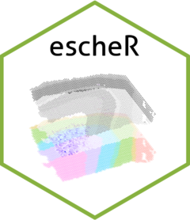
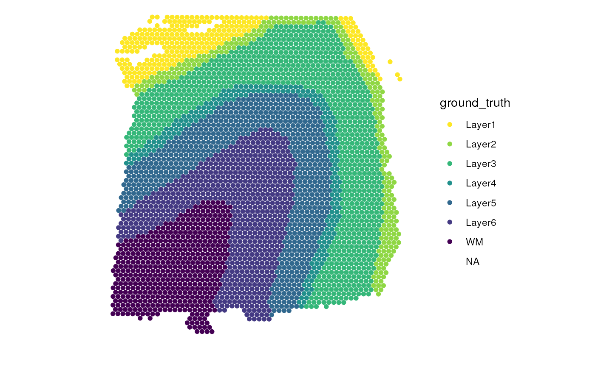

Adding fill to highlight the figure in the spatial map
Source:R/add_fill.R, R/add_fill_bin.R
add_fill.RdAdding fill to highlight the figure in the spatial map
Arguments
- p
a spatial map created by
make_escheR(), with or without other layers of aesthetics.- var
A character(1) with the name of the colData(spe) column that has the values to be used as the background.
- point_size
A numeric(1) specifying the size of the spot in the ggplot. Defaults to 2.
- ...
Reserved for future arguments.
- bins
numeric vector giving number of bins in both vertical and horizontal directions. Set to 30 by default.
Examples
library(STexampleData)
#> Loading required package: ExperimentHub
#> Loading required package: BiocGenerics
#>
#> Attaching package: ‘BiocGenerics’
#> The following objects are masked from ‘package:stats’:
#>
#> IQR, mad, sd, var, xtabs
#> The following objects are masked from ‘package:base’:
#>
#> Filter, Find, Map, Position, Reduce, anyDuplicated, aperm, append,
#> as.data.frame, basename, cbind, colnames, dirname, do.call,
#> duplicated, eval, evalq, get, grep, grepl, intersect, is.unsorted,
#> lapply, mapply, match, mget, order, paste, pmax, pmax.int, pmin,
#> pmin.int, rank, rbind, rownames, sapply, setdiff, sort, table,
#> tapply, union, unique, unsplit, which.max, which.min
#> Loading required package: AnnotationHub
#> Loading required package: BiocFileCache
#> Loading required package: dbplyr
#> Loading required package: SpatialExperiment
#> Loading required package: SingleCellExperiment
#> Loading required package: SummarizedExperiment
#> Loading required package: MatrixGenerics
#> Loading required package: matrixStats
#>
#> Attaching package: ‘MatrixGenerics’
#> The following objects are masked from ‘package:matrixStats’:
#>
#> colAlls, colAnyNAs, colAnys, colAvgsPerRowSet, colCollapse,
#> colCounts, colCummaxs, colCummins, colCumprods, colCumsums,
#> colDiffs, colIQRDiffs, colIQRs, colLogSumExps, colMadDiffs,
#> colMads, colMaxs, colMeans2, colMedians, colMins, colOrderStats,
#> colProds, colQuantiles, colRanges, colRanks, colSdDiffs, colSds,
#> colSums2, colTabulates, colVarDiffs, colVars, colWeightedMads,
#> colWeightedMeans, colWeightedMedians, colWeightedSds,
#> colWeightedVars, rowAlls, rowAnyNAs, rowAnys, rowAvgsPerColSet,
#> rowCollapse, rowCounts, rowCummaxs, rowCummins, rowCumprods,
#> rowCumsums, rowDiffs, rowIQRDiffs, rowIQRs, rowLogSumExps,
#> rowMadDiffs, rowMads, rowMaxs, rowMeans2, rowMedians, rowMins,
#> rowOrderStats, rowProds, rowQuantiles, rowRanges, rowRanks,
#> rowSdDiffs, rowSds, rowSums2, rowTabulates, rowVarDiffs, rowVars,
#> rowWeightedMads, rowWeightedMeans, rowWeightedMedians,
#> rowWeightedSds, rowWeightedVars
#> Loading required package: GenomicRanges
#> Loading required package: stats4
#> Loading required package: S4Vectors
#>
#> Attaching package: ‘S4Vectors’
#> The following object is masked from ‘package:utils’:
#>
#> findMatches
#> The following objects are masked from ‘package:base’:
#>
#> I, expand.grid, unname
#> Loading required package: IRanges
#> Loading required package: GenomeInfoDb
#> Loading required package: Biobase
#> Welcome to Bioconductor
#>
#> Vignettes contain introductory material; view with
#> 'browseVignettes()'. To cite Bioconductor, see
#> 'citation("Biobase")', and for packages 'citation("pkgname")'.
#>
#> Attaching package: ‘Biobase’
#> The following object is masked from ‘package:MatrixGenerics’:
#>
#> rowMedians
#> The following objects are masked from ‘package:matrixStats’:
#>
#> anyMissing, rowMedians
#> The following object is masked from ‘package:ExperimentHub’:
#>
#> cache
#> The following object is masked from ‘package:AnnotationHub’:
#>
#> cache
spe <- Visium_humanDLPFC()
#> see ?STexampleData and browseVignettes('STexampleData') for documentation
#> loading from cache
make_escheR(spe) |>
add_fill(var = "ground_truth")
